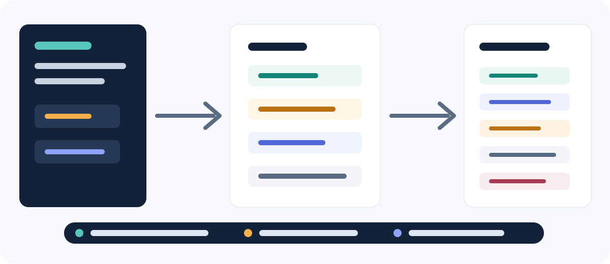

Real pain
AI agent instructions drift across repos, PR templates, Copilot rules, and release docs. Reviewers cannot tell whether guidance is current.
GTM demo / investor pitch
AtlasCart uses Loom to generate agent instructions, PR review policy, release readiness, and demo metadata from one deterministic workflow.
npm run loom:generate

AI agent instructions drift across repos, PR templates, Copilot rules, and release docs. Reviewers cannot tell whether guidance is current.
Prompt governance becomes a typed, imported, tested build asset with explicit file writes and traces for every generated artifact.
The pipeline runs app tests, validates Loom, runs deterministic Loom tests, regenerates artifacts, and fails on stale guidance.
Handwritten agent docs
Copy-pasted review checklists
No prompt tests
No generation trace
Generated AI handbook
Generated Copilot policy
Generated PR template
Deterministic tests and trace